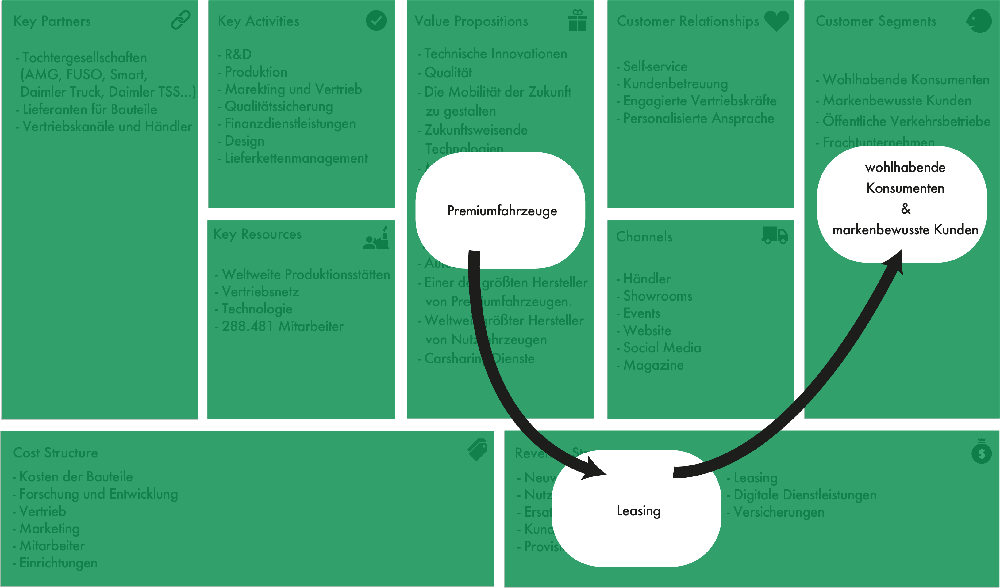
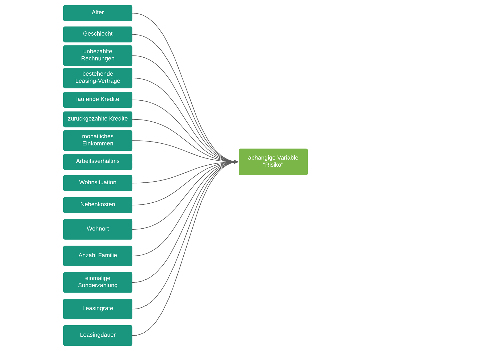

1. Einführung¶
Identifizierung von Usecases¶
Reduzierung des Risikos bei Leasinganträgen

Ähnlich wie im ersten Usecase, geht es dieses Mal wieder um das Thema Leasing. Für markenbewusste Kunden und wohlhabende Konsumenten bietet die Mercedes Benz Bank attraktive Leasingprodukte an. So können Leasingnehmer je nach Lebenssituation das passende Fahrzeug leasen.
Doch wer kann ein Leasingvertrag abschließen? Hierbei läuft es ähnlich ab, wie bei einer Bank. Bei jeden Leasingantrag überprüft die Mercedes Benz Bank anhand von verschiedenen Faktoren, ob der Kunde eine ausreichende Bonität vorweisen kann. So wird zu einem sichergestellt, dass die Mercedes Benz Bank die Leasingrate erhält und zum anderen wird auch der Leasingnehmer geschützt, sodass er in keine finanziellen Schwierigkeiten kommt.
Erste Problemdefinition¶
Ich untersuche, anhand welcher Faktoren das Risiko von Leasinganträgen reduziert werden kann, weil ich herausfinden möchte, ob ein Modell in der Lage ist, dass Risiko von Leasinganträgen zu bewerten. Darauf basierend möchte ich die Mitarbeiter im Mercedes Benz Handel und die Bankmitarbeiter mit meinem Modell unterstützen, um die Auftragsbearbeitung zu beschleunigen und das Risiko von Leasinganträgen zu reduzieren.
Identifizierung von potenziellen relevanten Variablen¶
Um das Risiko eines Leasingantrags genau beurteilen zu können, muss eine Vielzahl von Faktoren betrachtet werden. In erster Linie spielt vor allem das Zahlungsverhalten des Kunden eine große Rolle. Hierbei kann man auf die Daten von der Schufa zurückgreifen, um erste Erkenntnisse über seine Kreditwürdigkeit zu erfahren. Aus diesen Daten kann man beispielsweise erfahren, ob es in der Vergangenheit beispielsweise zu Unregelmäßigkeiten oder unbezahlten Rechnungen gekommen ist. Des Weiteren besitzt die Schufa auch Informationen über bereits bestehende Leasing-Verträge, Mobilfunkverträge, laufende Kredite und zurückgezahlte Kredite. Anhand dieser Daten kann man bereits erkennen, ob sich seine Vergangenheit negativ auf seine Bonität auswirkt (vgl. schufa, o. D.).
Neben den Daten der Schufa, sollte man ebenfalls das monatliche Einkommen berücksichtigen. Hierbei gilt es auch zu prüfen, in welchem Arbeitsverhältnis der Kunde steht. Ist er selbstständig, hat er einen befristeten oder unbefristeten Arbeitsvertrag? Mit diesen Daten erhält man weitere Informationen, ob der Kunde über den Leasingzeitraum auch die Raten zahlen kann.
Die finanziellen Verpflichtungen sollten ebenfalls betrachtet werden. Wohnt der Kunde zur Miete? Wie hoch sind seine Nebenkosten? Wohnt der Kunde in der Stadt oder eher ländlich? Gibt es Angehörige die finanziell unterstützt werden müssen? All das gibt auch einen Aufschluss darüber, wie viel Geld schlussendlich für die Leasingrate übrigbleibt.
Neben den finanziellen Informationen des Kunden, sollte man im Modell auch die vertraglichen Bedingungen berücksichtigen. So spiel auch die einmalige Sonderzahlung, die Leasingrate und die Leasingdauer ebenfalls eine große Rolle.
Mit all diesen Informationen wäre es möglich ein Klassifikationsmodell zu entwickeln, dass vorhersagen kann, ob das Risiko bei einem Leasingantrag zu groß ist oder nicht. So soll das Modell mit einem einfachen „ja“ oder „nein“ Rückmeldung geben, ob man den Leasingantrag annehmen sollte oder nicht.
Damit das Modell auch präzise Ergebnisse liefert, muss das Modell mit einem qualitativ hochwertigen Datensatz trainiert werden. Der Datensatz muss hierfür pro Instanz als abhängige Variable das Risiko mit „ja“ oder „nein“ und als unabhängigen Variablen die vertraglichen und finanziellen Informationen enthalten.
In der folgenden Grafik sind die potenziellen relevanten Variablen zu sehen, die einen Einfluss auf die abhängige Variable „Risiko“ haben.

Definition der Metriken¶
Heuristische Gedanken
Um erste Metriken für diesen Usecase zu definieren, ist es hilfreich sich zunächst zu überlegen, wie man vorgehen würde, wenn man nicht auf das Model zurückgreifen könnte.
Wenn man kein Modell verwenden würde, so würde man vermutlich auf Erfahrungswerte setzen und eine Vielzahl von Faktoren Schritt für Schritt manuell prüfen. Diese Vorgehensweise ist zu einem sehr zeitaufwendig und zum anderen besteht die Gefahr, dass man das Risiko des Leasingantrags manuell falsch eingestuft hat und es so zu einem Zahlungsausfall kommen könnte.
Model Problem Definition
Wir wollen, dass das Modell das Risiko von Leasinganträgen ermittelt. Das ideale Ergebnis ist es, eine präzise Einschätzung zu erhalten, ob man den Leasingantrag annehmen sollte oder nicht. So könnte man das Risiko bei Leasinganträgen reduzieren und den Bearbeitungsprozess beschleunigen.
Definition der Erfolgsmetriken
Erfolgsmetriken:
Reduzierung der Zeit, die für die Prüfung des Leasingnehmers benötigt wird
Reduzierung des Risikos von Zahlungsausfällen
Key results (KR):
Reduzierung der Zeit um 20%, die für die Prüfung des Leasingnehmers benötigt wird
Reduzierung von Zahlungsausfällen von 10%
Misserfolg des Modells:
Die Zeit, die für die Prüfung des Leasingnehmers benötigt wird, konnte nur um 10% reduziert werden.
Reduzierung von Zahlungsausfällen von 3%